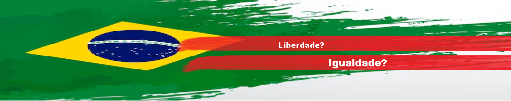
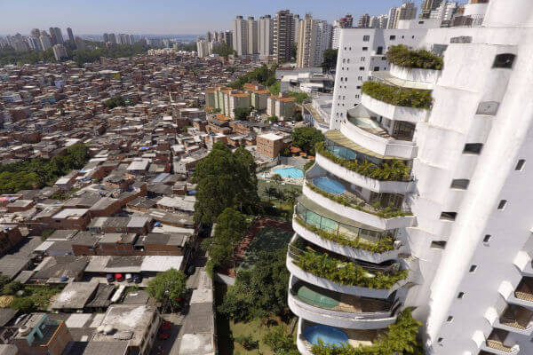
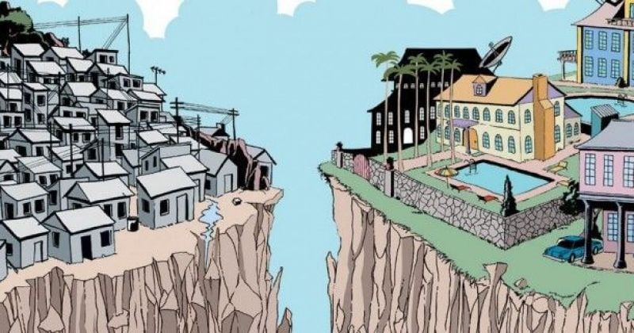
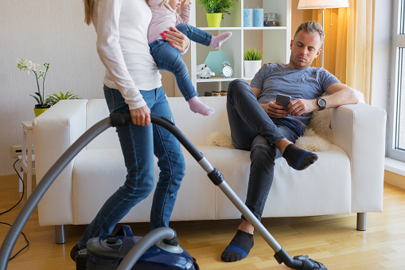
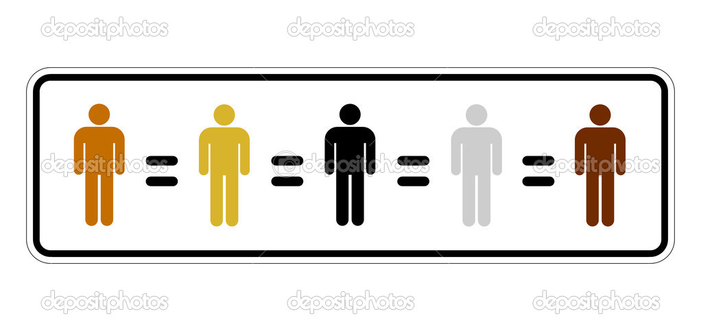
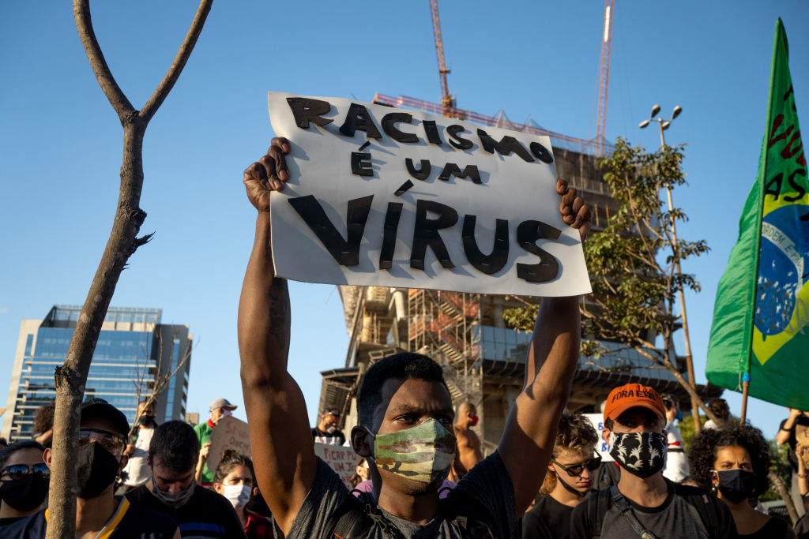
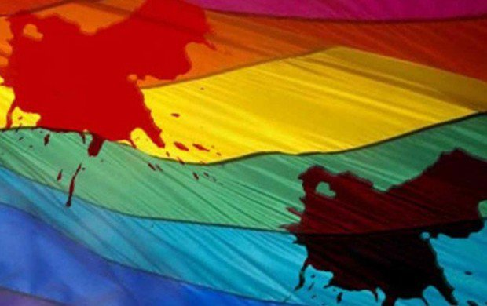
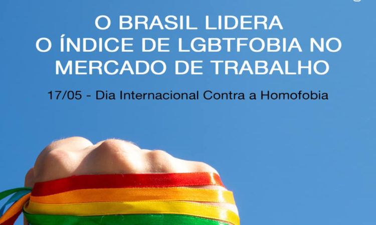
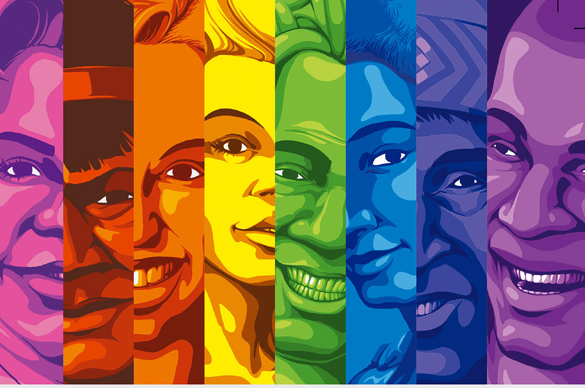

<!DOCTYPE html>
<html lang="pt-br"></html>
<head>
    <meta charset="UTF-8">
    <meta http-equiv="X-UA-Compatible" content="IE=edge">
    <meta name="viewport" content="width=device-width, initial-scale=1.0">
    <title>Brasil, que país é este?</title>
    <link rel="stylesheet" href="css/estilo.css">
</head>
<body background="imagens/fundo.png">
   
    <div id="pagina">
    <div id="menu">
        <a href="index.html">Introdução</a>&nbsp;|
        <a href="desigualdades.html" target="_self">Desigualdades</a>&nbsp;|
        <a href="falsaliberdade.html" target="_self">Falsa Liberdade</a>&nbsp;|
        <a href="músicasevideos.html" target="_self">Músicas e Vídeos</a>
    </div>
    <div class="cabecalho">
        
            </div>
            <div id="conteudo">
                <div id="principal">
                
                    <h3 style="color: #94FF29;">Desigualdades</h3> <br>
                    <h4 style="color: #129fd6;">Desigualdade social</h4>
                    <p>A desigualdade social é a diferença existente entre as diferentes classes sociais, levando-se em conta fatores econômicos, educacionais e culturais.
                    </p> <br>
                    <p>Ela é um mal que afeta todo o mundo, em especial os países que ainda encontram-se em vias de desenvolvimento. A desigualdade pode ser medida por faixas de renda, em que são consideradas as médias dos mais ricos em comparação às dos mais pobres. Também podem ser utilizados, como dados para o cálculo de desigualdade, fatores como o IDH, a escolarização, o acesso à cultura e o acesso a serviços básicos — como saúde, segurança, saneamento etc.
                   </p> <br>
                    <br>
                   <h5 style="color: #129fd6;" > Como acabar com a desigualdade social? </h5>
                   <p>A perspectiva revolucionária marxista compõe uma visão radical que intentaria acabar de vez com a desigualdade. Hoje existem outras visões menos revolucionárias e menos radicais que procuram reduzir as desigualdades sociais para melhorar as condições de vida das pessoas, porém, sem implodir o capitalismo.
                </p> <br>
                <p>Uma dessas vertentes é a social-democracia, a qual se desvia do socialismo científico por, justamente, manter um sistema político democrata republicano e certo nível de liberdade econômica. Essa corrente também se esquiva do liberalismo, pois intervém, até certo ponto, no funcionamento econômico e propõe políticas de garantia do bem-estar social.
                </p> <br>
                <p>As medidas de elevação do bem-estar social incluem:
                </p> <br>
                <ul>
                    <li>acesso à saúde e educação de qualidade para todos;
                    </li>
                    <li>emprego e assistência momentânea para aqueles que estão fora do mercado de trabalho;
                    </li>
                    <li>garantia da previdência social e dos direitos trabalhistas.
                    </li>
                </ul> <br>
                <p>Segundo o economista francês Thomas Piketty, em pesquisa que levantou dados socioeconômicos de vários países, o Brasil tem mais renda concentrada nas mãos de poucas pessoas que os grandes países árabes, onde o 1% de bilionários mais ricos representa apenas 26% da renda local. Em 2015, o coeficiente de Gini brasileiro foi marcado em 0,515, deixando o nosso país no 10º lugar do ranking dos mais desiguais do mundo, sendo que o 1º lugar é ocupado pela África do Sul.</p> <br>
                 <br> 
                <h4 style="color: #129fd6;">Desigualdade de gênero</h4>
                <p>Desigualdade de gênero expressa-se pelo sexismo, pelo machismo e pela misoginia perpetrados por uma cultura patriarcal imposta pelos homens sobre as mulheres.
                </p> <br>
                <p>Desde o início da humanidade, o homem utilizou de sua força física para dominar as relações sociais. Esse domínio começou no âmbito familiar privado e estendeu-se ao âmbito público com o passar do tempo. As mulheres ficaram sob o domínio de homens, e os espaços públicos relativos ao comércio, às empresas, à política e às ciências foram dominados quase que exclusivamente por eles até o século XX. Aí está a gênese da desigualdade de gênero.</p> <br>
                 <br>
                <p>Atualmente, os movimentos feministas ganham voz nas redes sociais, mas a desigualdade persiste. A mulher ainda é tratada de maneira desigual em relação ao homem. Os espaços políticos, acadêmicos e científicos e sociais continuam dominados por homens, que são maioria em número na sua ocupação.</p> <br>
                <p>No mundo corporativo, os homens são maioria em cargos de chefia além de ganharem uma média salarial maior para desempenharem a mesma função que as mulheres, apesar dessas buscarem mais estudos e qualificação. A tendência é que a voz dos homens ainda seja mais ouvida que a voz das mulheres, e que elas tenham que se esforçar mais do que eles para terem seus espaços garantidos.</p> <br>
                
                <p>O Brasil ocupa o 90º lugar num ranking elaborado pelo Fórum Econômico Mundial, exposto na página da Fundação Tide Setubal, que analisou 144 países. Em 2016, o Brasil ocupava o 79º lugar, o que resultou no intervalo de dois anos uma queda de 11 posições. Para elaborar o ranking, a pesquisa relacionou temas como remuneração, assédio sexual, ocupação de cargos políticos, entre outros. Com forte desigualdade racial, os critérios analisados apontam que mulheres negras sofrem muito mais, tendo, por exemplo, menor acesso à escolaridade e ocupando profissões não especializadas e que pagam menos.</p> <br>
                <p>É preciso reconhecer o valor da mulher em nossa sociedade, que tem o mesmo peso e a mesma importância que o do homem. É preciso, acima de tudo, tratar a mulher com respeito e garantir a ela a equidade necessária para o seu pleno desenvolvimento social. Somente assim é possível ter-se uma sociedade amplamente democrática.</p> <br>
                <h4 style="color: #129fd6;">Desigualdade racial</h4>
                <p>A desigualdade racial é a diferença em oportunidades e condições de vida que ocorre em função da etnia de uma pessoa. Negros, índios e mestiços - são exemplos de grupos que enfrentam desafios decorrentes de processos históricos de segregação.
                </p> <br>
                <p>O Brasil é um dos países mais desiguais do mundo e a cor de pele é um elemento estruturante da diferença entre grupos. A desigualdade racial é refletida em diferentes condições de educação, renda e emprego dessa população.
                </p> <br>
                <p>O Brasil é um dos países mais desiguais do mundo e a cor de pele é um elemento estruturante da diferença entre grupos. A desigualdade racial é refletida em diferentes condições de educação, renda e emprego dessa população.
                </p> <br>
                 <br>
                <p>Apesar de os negros serem cerca de 54% da população, os índices socioeconômicos não são proporcionais entre toda a população. A Pesquisa Nacional por Amostra de Domicílio (PNAD) do IBGE mostra essa disparidade entre vários aspectos.
                </p> <br>
                <ul>
                    <li>Educação</li>
                    <p>Em 2017, a taxa de brancos com ensino superior completo era de 22,9%, enquanto que a de negros era 9,3%. O analfabetismo, em 2016, era maior entre os negros e pardos, que contavam com 9,9% de sua população incapaz de ler. Nesse mesmo ano, a taxa de brancos analfabetos foi 4,2%.
                    </p> <br>
                    <li>Renda</li>
                    <p>Essa pesquisa mostrou que, em 2017, a renda mensal de negros e pardos variava entre R$ 1.570 e R$ 1.606, enquanto a média para os brancos era de R$ 2.814. Os negros e pardos também representam os mais pobres. Os pesquisadores isolaram os 10% mais pobres do país e verificaram que destes, 75% eram negros ou pardos.
                    </p> <br>
                    <li>Trabalhos</li>
                    <p>As taxas de desemprego ou de emprego informal também são desfavoráveis para essa parcela da população. No primeiro trimestre de 2018 havia 14,6% de negros desempregados, uma taxa superior aos 11,9%, que foi a média de desemprego geral naquele período.
                    </p> <br>
                    <li>Homicídios</li>
                    <p>O negros também estão no topo das estatísticas de homicídios no Brasil. Segundo levantamento do Fórum Brasileiro de Segurança Pública, eles representam 71% das vítimas desses crimes e há indícios de agravamento: o número de negros mortos entre 2005 e 2015 aumentou 18%, enquanto entre a população branca, esse índice caiu 12%.
                    </p> <br>
                    <li>Violência contra a mulher</li>
                    <p>A violência contra a mulher também merece uma análise com recorte racial. No Brasil, em média, 64% das mulheres assassinadas são negras e as estatísticas não mostram avanços. Segundo o Mapa da Violência de 2015, entre 2003 e 2013, o homicídio de mulheres negras foi de 1.864 para 2.875, sendo que no mesmo período os homicídios de mulheres brancas caiu de 1.747 para 1.576.
                    </p> <br>
                </ul> 
                 <br>
                <h5 style="color: #129fd6;" > Dia internacional contra a discriminação racial</h5>
                <p>Em 21 de março de 1960, a polícia do regime Apartheid entrou em conflito com negros que faziam uma manifestação pacífica, deixando 69 mortos e 186 feridos. Os manifestantes eram contra a Lei do Passe, que obrigava a população negra a andar com um cartão que descrevia os lugares que poderiam frequentar.
                    Depois desse acontecimento, a Organização das Nações Unidas determinou o dia 21 de março como Dia Internacional da Luta contra a Discriminação Racial.
                    </p> <br>
                    <h4 style="color: #129fd6;">Desigualdade LGBTQUIA+</h4>  
                    <p>Apesar de ter alcançado muitas conquistas ao longo dos anos, a população LGBTQIA+ ainda enfrentam desafios diários, em relação a direitos como saúde, educação, trabalho, entre outros. As pessoas LGBTQIA+ ainda têm um longo caminho a percorrer, no que diz respeito a uma vida mais justa, igualitária e sem preconceitos.
                    </p> <br>
                    
                    <h5 style="color: #129fd6;" > Desafios das pessoas LGBTQIA+ no mercado de trabalho </h5>
                    <p>É de conhecimento geral que nos últimos anos, o Brasil traz números cada vez mais preocupantes com relação à taxa de desemprego. Quando falamos então da situação da comunidade LGBTQIA+, os desafios são ainda maiores, uma vez que essas pessoas sofrem diariamente com o preconceito, exclusão, violação de seus direitos e dificuldade de acesso à educação e ao mercado de trabalho.
                        De acordo com uma pesquisa realizada pelo Center for Talent Innovation, 61% dos funcionários gays e lésbicas decidem por esconderem sua sexualidade de gestores e colegas em virtude do medo de perderem o emprego.
                        </p> <br>
                        <p>A pesquisa ainda revelou outros dados alarmantes:</p>
                        <ul>
                            <li>33% das empresas do Brasil não contratariam para cargos de chefia pessoas LGBTQIA+;
                            </li>
                            <li>41% das pessoas LGBTQIA+ afirmam terem sofrido algum tipo de discriminação em razão da sua orientação sexual ou identidade de gênero no ambiente de trabalho;
                            </li>
                            <li>90% de travestis se prostituem por não terem conseguido nenhum outro emprego, até mesmo aqueles que têm boas qualificações.
                            </li> 
                        </ul> <br>
                        <p>Diante desse cenário, os debates e discussões sobre o tema têm aumentado, especialmente nas multinacionais. Assim, grandes empresas de diversos segmentos passaram a promover o Fórum de Empresas e Direitos LGBTQIA+, que tem como objetivo criar condições e assegurar políticas e práticas para incluir a população LGBTQIA+ no mercado de trabalho. Por outro lado, as estatais tendem a cultivar uma cultura mais fechada com relação à iniciativas para ascensão, inclusão e desenvolvimento da população LGBTQIA+.
                        </p> <br>
                        
                        <h5 style="color: #129fd6;" > As dificuldades no acesso à saúde </h5>  
                         <p>Direito garantido por lei, o acesso à saúde é oferecido pelo sistema público ou particular e, na teoria, deveria atender todas as pessoas de forma humana, respeitosa e integral. Porém, essa não é a realidade de muitas pessoas LGBTQIA+.  
                        </p>  <br>
                        <p>Em uma matéria especial, feita pelo Portal E+, do Estadão, pessoas homossexuais, bissexuais, travestis e transexuais afirmaram que os médicos não estão preparados para atendê-los. E que, muitas vezes, são os próprios médicos que manifestam o despreparo ou a negligência mediante à saúde física, sexual e mental de pessoas LGBTQIA+.
                        </p> <br>
                        <p>Um dos dilemas apontados pela matéria, é o equivocado uso do termo homossexualismo. O sufixo “ismo” está relacionado, entre outras coisas, a doenças, mas a Organização Mundial da Saúde (OMS), desde 1990, deixou de classificar a homossexualidade como patologia e a retirou da Classificação Internacional de Doenças.
                        </p> <br>
                        <p>Para a comunidade LGBTI+, a heteronormatividade e o estereótipo de que todos têm alguma infecção sexualmente transmissível (IST) é outro problema no acesso à saúde. É uma prática comum que médicos peçam um exame sorológico para detectar HIV sem ao menos perguntar sobre as práticas sexuais dos pacientes. </p> <br>
                        <p>Para travestis e transexuais, a principal barreira é fazer valer o uso do nome social e ser tratado conforme o gênero com o qual se identifica. Ainda que o serviço de saúde SUS tenha sido o primeiro a utilizar o nome social, o atendimento na prática não leva isso em consideração.</p> <br>
                        
                        <h5 style="color: #129fd6;" >Dificuldades das pessoas LGBTQIA+ na educação </h5>
                        <p>Segundo a Pesquisa Nacional Sobre o Ambiente Educacional no Brasil 2016, feita pela Associação Brasileira de Gays, Lésbicas, Bissexuais, Travestis e Transexuais (ABGLT), 73% dos alunos LGBTs entrevistados já sofreram agressões verbais devido sua orientação sexual e 68% por conta de sua identidade de gênero, revelando como a escola pode ser um espaço hostil e violento para esses jovens.</p> <br>
                        <p>Diversos motivos levam milhares de jovens e adolescentes a abandonarem os estudos. Atualmente, estima-se que 25 milhões de pessoas estão fora da escola, segundo dados do IBGE. No caso da população LGBTQIA+, discriminação e violência são causas que, não raro, levam ao abandono, segundo Fábio Meirelles, coordenador-geral de Direitos Humanos do MEC entre 2011 e 2015.</p> <br>
                        <hr> <br>
                       
                    <p>Como podemos ver, a população brasileira não é totalmente livre e muito menos igualitária, mas para trabalhar com um melhoramento, devemos visualizar primeiro nosso governo e nossa moral ética e social. </p> <br>
                    
                    <h4 style="color:#94FF29;"> Referências</h4>
                    <ul>
                        <li> <a href="https://brasilescola.uol.com.br/sociologia/desigualdade-de-genero.htm" target="_blank"> Desigualdade de gênero</a> </li> <br>
                            <li> <a href="https://brasilescola.uol.com.br/sociologia/desigualdade-social.htm#:~:text=A%20desigualdade%20social%20%C3%A9%20a,pelos%20pa%C3%ADses%20pobres%20do%20mundo.
                                ">Desigualdade social</a>
                            </li> <br>
                        <li><a href="https://www.significados.com.br/desigualdade-racial/
                            ">Desigualdade Racial</a>
                        </li> <br>
                        <li><a href="https://www.fundobrasil.org.br/blog/as-dificuldades-enfrentadas-pelas-pessoas-lgbtqia/
                            ">Desigualdade LGBTQUIA+
                        </a></li> <br>
                    </ul>
                </div>
            </div>
                <div id="rodape">
                    <h4>&copy;GABRIELA REGINA MONÇÃO 1ºINFO_TURMA A<br></h4>
                </div>
    </div>
</body>
</html>